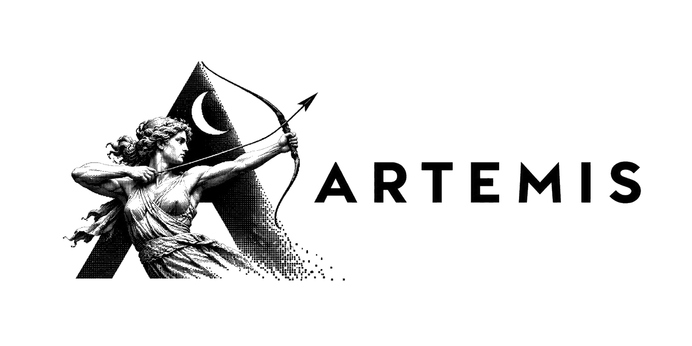
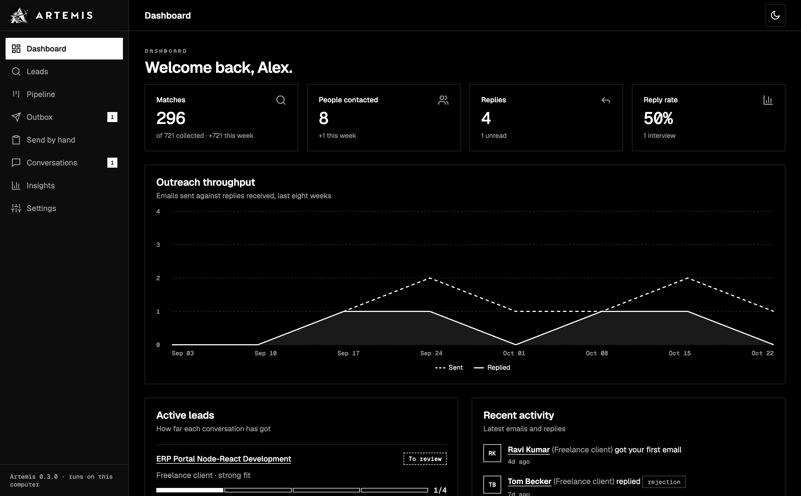
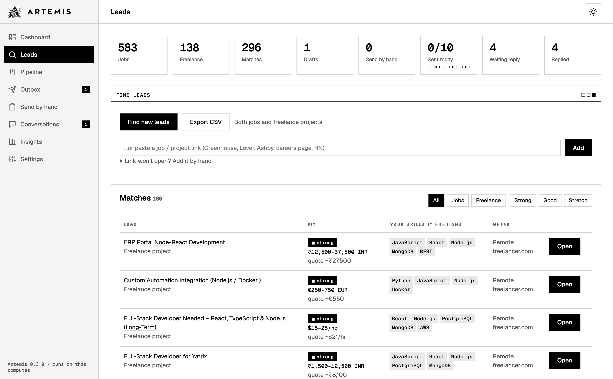
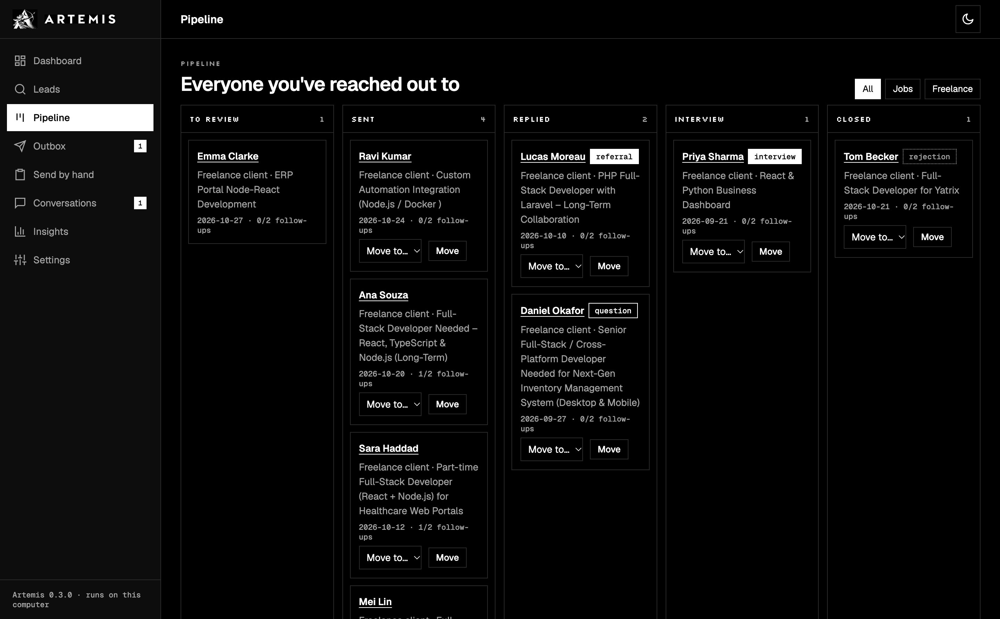

Give it your resume. Artemis finds matching jobs and freelance projects, finds the right recruiter, writes the email or proposal, sends it from your Gmail after you approve, and follows up until they answer. Free, and it runs on your own computer.

How it works
Company job boards, remote job lists, Hacker News, Freelancer.com, or any link.
Scores each lead against your skills, roles, cities and rates, and shows why.
The recruiter and hiring manager, with their likely email.
A short email from your resume and projects. Sent from your Gmail after you approve.
Day 4 and day 7, in the same thread. Stops as soon as they reply.
Why people use it
A few personal emails a day to the right person beat hundreds of one-click applications.
Mentions your most relevant project with its link, and follows your own notes for each lead.
Every first email waits for your approval. Max 10 a day, weekdays and working hours only.
Resume, contacts and keys stay on your computer. No account, no server, no telemetry.
Job hunting, freelance clients, or both. Suggests a quote for every project.
MIT-licensed. Works with free tiers of Gmail, Gemini, Groq, Brave Search and Hunter.io, or offline AI with Ollama.
Inside


Quick start
git clone https://github.com/Manideep-Ai-ai/artemis-job-agent.git cd artemis-job-agent python -m venv .venv && source .venv/bin/activate pip install -e . leadhunter web # then open http://127.0.0.1:8765
A setup wizard asks for your goal, your resume and your Gmail App Password. It starts in practice mode, so you can read every email before anything is sent. Full guide on GitHub.
FAQ
Artemis is a free, open-source AI job search agent that runs on your own computer. It finds jobs and freelance projects that match your resume, finds the recruiter or hiring manager, writes a personal cold email or proposal, sends it from your Gmail after you approve it, and follows up until they reply.
Yes. Artemis is MIT-licensed. The services it can use (Gmail, Brave Search, Gemini, Groq, Hunter.io, Telegram) all have free tiers, and AI can also run offline with Ollama.
No. It doesn't fill in application forms. It contacts people directly with a short email, and nothing is sent until you approve it. At most 10 emails go out a day.
No. LinkedIn bans automation. Artemis writes the connection note and message and opens the profile; you click send.
On your computer: your resume, leads and contacts in a local SQLite file, and your keys in a local .env file. There is no Artemis server and no telemetry.
Greenhouse, Lever, Ashby, SmartRecruiters and Recruitee company boards, Remotive, Arbeitnow, Hacker News Who is hiring, Freelancer.com, and any job link you paste.
Mass-apply bots send the same application to hundreds of listings. Artemis sends a few specific emails a day to the right person, written from your resume and your own projects, which is how most referrals and interviews start.